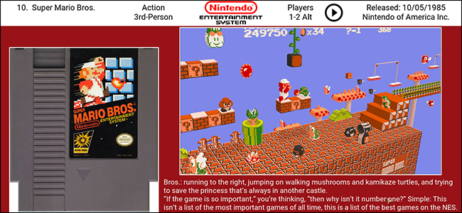

How-To Geek
How to Browse and Play Terabytes of Retro Games From Your Couch With Kodi

Ever wish you could browse a massive collection of retro video games, from your couch, and start playing anything without getting up? If you’ve got a home theater PC with both Kodi and RetroArch installed, this dream setup could be yours.
![]()
As part of its mission to preseve digital culture, The Internet Archive hosts a massive collection of retro video games, which you can even play online. But gaming on your computer isn’t quite the same as sitting on a couch and playing on your TV.
A free Kodi add-on, however, gives you a beautiful interface for browsing a massive collection of ROMs, totaling around 2TB. You can read about the games, look at screenshots, and even watch their retro TV commercials. And, when you’re ready, you can launch the games and play them right from your couch.
Interested? Here’s how to set everything up.
Step One: Install the Internet Archive ROM Launcher
Before we can do anything, we need to install the Internet Archive ROM Launcher add-on. If you know how to install Kodi add-ons already, this isn’t going to be hard for you, but here’s a quick rundown just in case.
First, download Zach Morris’ repository, which comes as a ZIP file. Then, head to Kodi’s settings screen, and select the “Add-ons” subsection.

Next, pick “Install from zip file”.
You’ll need to browse your file system and find the ZIP file your downloaded before. On Windows, it should be in C:\Users\YourUsername\Downloads, but might vary depending on your browser’s settings.
Once you add the ZIP file, head back to the Add-ons section of the settings, and this time go to Install from repository > Zach Morris Add-ons > Video Add-ons. Here you’ll find Internet Archive ROM Launcher. Go ahead and install it.
A popup will let you know when the download has completed. Once it has, head back to Kodi’s main screen, then go to Video Add-ons.
Here you will find Internet Archive ROM Launcher.
I’m sure you’re ready to play some games, but sadly we’ve got a little bit of work to do first.
Step Two: Configure Internet Archive ROM Launcher
Select the new add-on, then bring up the menu. If you’re using the keyboard, press “C”, if you’re using the mouse, right-click the icon. You’ll see something like this:
Select “Add-on settings”, and you’ll dive head first into a bunch of configurations. You can check these out later, but for now we’re concerned with getting this add-on to run some games. Head to the “External Launchers” tab.
The only option here lets you pick what sort of system you have. Select “External”.
Then point out what operating system you’re using. For the purposes of this article, we’ll be assuming a Windows-based system, though steps should be similar on other operating systems.
With that all sorted, you can now tell the add-on where your RetroArch executable is. Select “RetroArch App Location”, then browse to your RetroArch folder and select retroarch.exe.
Once you’ve done this, click click “OK” to save all of your settings. Then re-enter the settings screen, and head to the “Setup Wizard” tab. Pick “Set me up for”.
You will be asked what kind of system you’d like to run. “Balanced” is a good option for most systems, though if you don’t like the results you can always reconfigure things later.
Step Three: Configure Individual Lists
Now, when you open the add-on, you’ll see a collection of systems. In order to play the games, however, you need to set up each of these systems with an appropriate emulator. To finish this final step, pull up the menu for any given system. The first three options all start with “Update”, and we need to run them all.
These three steps are, in order:
- Update Download Path. Pick a custom directory, if you want to grab the ROMs later, or stick with the default if you don’t care.
- Update Launcher. Pick the External option, which we previously set up to be RetroArch.
- Update Ext Launcher Command. For this option, you’re going to need to pick a RetroArch core from the list to launch a particular ROM set. If necessary, fire up RetroArch and confirm which cores you have installed for each system–Kodi’s list will include every core, not just the ones you have.
Do not skip any of these steps, or your games will not launch. You’ll need to repeat all steps for every system. It’s a bit tedious, yes, but the results are worth it.
Step Four: Play Some Games
Now that you’ve set everything up, it’s finally time to play some games. Pick a system you’ve configured and start browsing. You’ll see a list of every game The Internet Archive has for a particular platform. If this is too overwhemling, there are also plenty of “Best Of” lists offered, giving you a nice entry point to a particular system. (You’ll have to configure these lists as though they’re a separate system, so repeat Step Three above as necessary).
The lists all over cover art, same as any Kodi plugin. Pick a game and you’ll be shown more information.
As you can see, there’s a picture of the cartridge, along with a rotating collection of fanart for the particular game. The top panel gives you information about the game, and also includes a circled “Play” triangle you can click to watch a TV commercial for the title. Buttons at the bottom allow you to “Download” or “Launch”. Click “Launch” and, if you’ve configured everything properly, you’ll be playing in no time.
Other Things You Can Configure
Feel free to browse the add-on’s settings for more options. For example, if you’d rather not have so many systems show up on the main screen, you can pull up the menu for any given system and select “Hide This Item”. If you find yourself going too far, and want to bring all those items back, there’s an option to bring things back in the settings.
By default, only one ROM is kept in the local cache. If you’d like more, that can also be changed in the settings. And if your system has trouble running games while Kodi runs in the background, there’s an option to close Kodi after a game launches.
If you’d like to learn even more, you can check out the official add-on wiki over on GitHub, or the add-on thread on the officail Kodi forums. Other than that, enjoy your gaming sessions.
![]()
![]()
![]()
![]()
![]()
![]()

![]()
![]()
This is assuming that "you" (the player) own legitimate versions of the (original) games. Copyright is retained on many. The scenario portayed here //could// be seen to be promoting illegal actions.
MattSouthsea UKIT / (c)-theft Lawyer
@Matt_Forbes this would not violate any copyright as the Internet Archive is the host of said ROM files. These games are out of copyright and are now part of the public domain. The ROM files are also not downloaded or copied to the end user they are simply streamed to them. End users could just as easily go to the link that was provided in the second paragraph and play these (stream these) through their browsers.
So where is the executable retroarch file? Is it something separate i download? Is it part of the zip file mentioned? The article does not say!
It's in the second sentence. The article says you need to have RetroArch installed and links to a guide on how to do just that.
And are you going to sue Microsoft for making legacy games, hardware, and controllers nonfunctional after OS upgrades and updates? Or are you just going to sue little people?
Great article!
For the part Select “RetroArch App Location”, then browse to your RetroArch folder and select retroarch.exe., how would I accomplish this on Linux? I'm currently using Kodibuntu.
I have to admit, I've no idea where the "binary" is on Kodibuntu, but if I had to guess I'd say it's in /usr/bin/.
You're absolutely right, thank you! It is /usr/bin/retroarch. It's fun playing roms on my Kodibuntu now with my wife. This is fantastic, thank you very much!
I'm having two weird, low priority issues now, not sure if anybody else is having these though:
1) PS1 roms will receive a "can't convert 7z" error and they won't launch. I downloaded 7zip but I still get the issue so I'm definitely looking for a fix for this one (trying to play some Threads of Fate!)
2) When I quit games and go back to Kodi from Retroarch, Kodi doesn't recognize input from the keyboard, only the mouse.
Anyone else experience these two glitches?
I'm glad you found the binary! I'd try to help with your issues, but my suspicion is that they're unique to your Kodibuntu setup. Sorry about that.